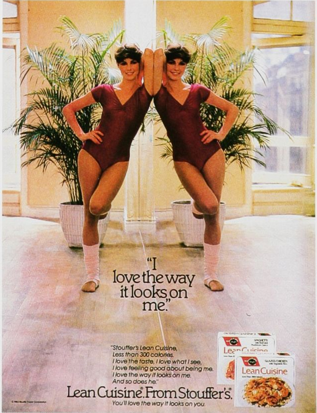
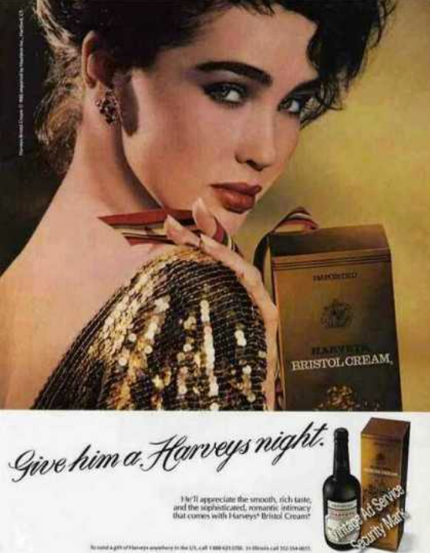

The Eighties
80s food and drink advertising is not as overtly sexualizing as it might be in today’s advertising; however, there are examples of how advertising capitalizes on the male gaze to market products to women by encouraging them to look at themselves through that lens, a tactic that is still prevalent now. The following Lean Cuisine from Stouffer’s and Harveys Bristol Cream advertisements exemplify this more subtle example of the male gaze in advertising. As you view each advertisement, think about the audience this markets to and how these companies utilize an implied male gaze of society to encourage consumers to buy their products.
Advertisement 1 Analysis
This advertisement for Lean Cuisine From Stouffer’s features a woman posing, showing off her body, accompanied by text about how she feels about using the product. Immediately, viewers will see the woman’s body, as it is even reflected in the mirror in the picture, giving it a greater presence in the advertisement. The use of her body, however, is not completely forced, however, as the Lean Cuisine product does promote a lower calorie alternative for meals, so using an image of someone’s “ideal” body is not exactly why this advertisement is an example of the male gaze. Where we actually see this is in the text towards the bottom of the advertisement. It says “Stouffer’s Lean Cuisine/Less than 300 calories / I love the taste. I love what I see / I love feeling good about being me / I love the way it looks on me / And so does he.” The last line “And so does he” implies an importance of male validation of the female body. It might encourage a woman’s view of herself under the male gaze as a female consumer could buy this product in hopes to change her body not entirely for herself but for men.
Advertisement 2 Analysis
This Harveys Bristol Cream advertisement markets to women once again when it says “Give him a Harveys night” beneath an image of a woman looking toward the viewer. The image of the woman puts her in context as a beautiful spectacle and the leading statement encourages that service towards men as someone more objectified; however, we can see more depth into the male gaze of this advertisement as we examine the other text. The smaller text states, “He’ll appreciate the smooth, rich taste, and the sophisticated, romantic intimacy that comes with Harveys Bristol Cream.” This advertisement attempts to promote its product by capitalizing on a woman’s stereotypical role of serving a man, especially as that pertains to romance and intimacy. The male gaze may not particularly be as prevalent aside from the woman pictured in the advertisement, but we do see that there is focus on how a woman should please and serve a man. In the case of the Harveys advertisement, this would be through giving a man a “Harveys night.”
Citation: Vintage ad browser. (n.d.). Retrieved November 29, 2021, from https://www.vintageadbrowser.com/.